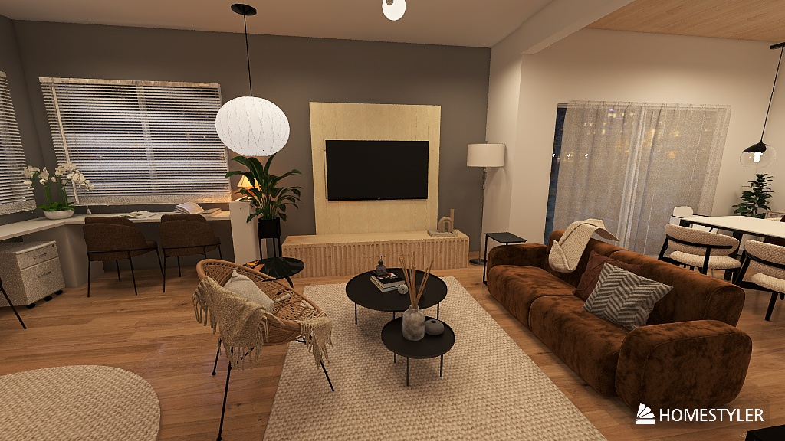
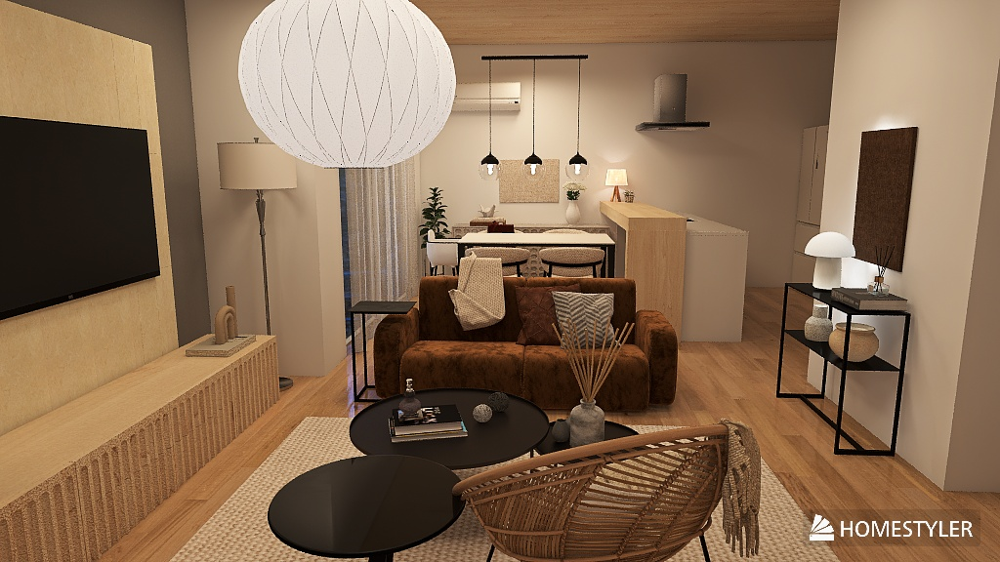
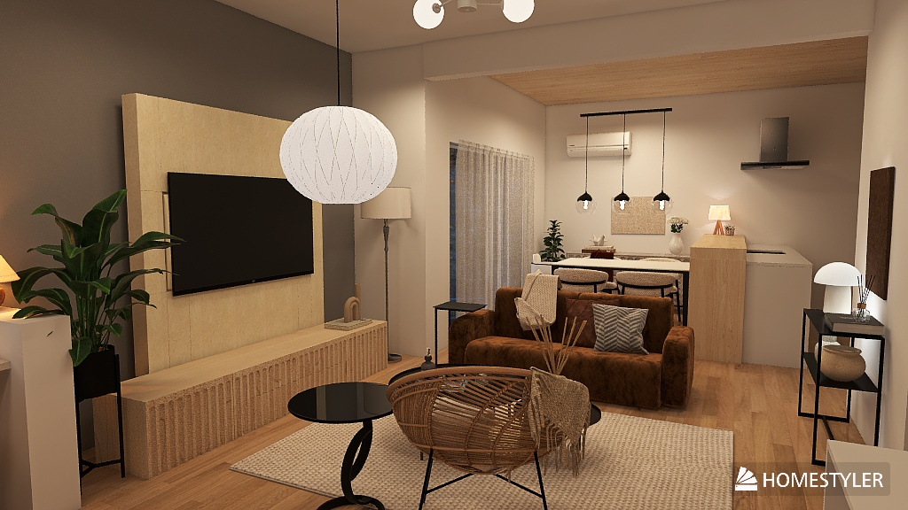
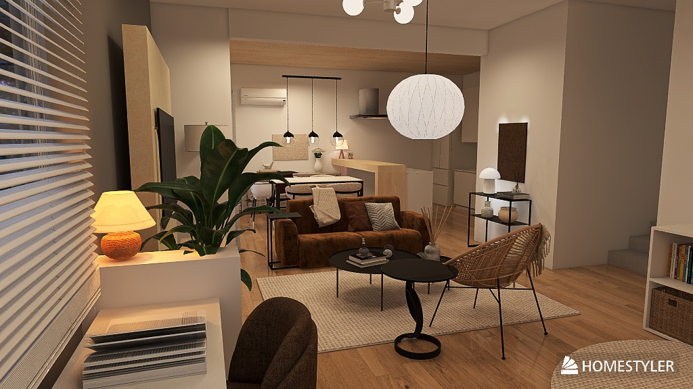
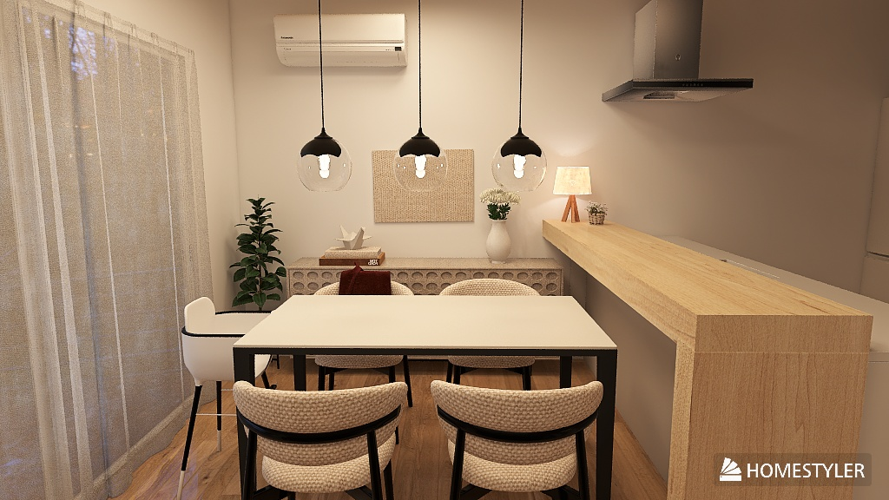
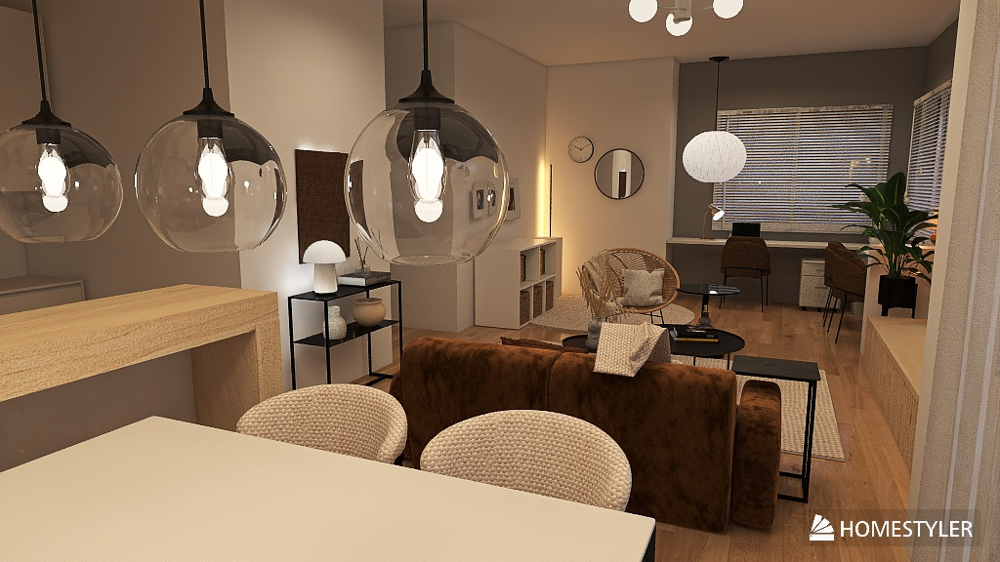
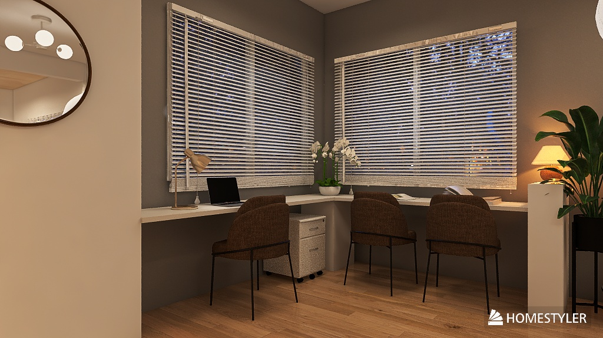

INTERIOR PROPOSAL ｜ 2026.06
4人家族・新居 ／ 在宅ワークと子育ての両立をかなえる
依頼者の好みから方向性を統一する。
丸み アイボリー／ベージュ ウッド グリーン（植物） 質感重視 物量を抑える
テーマ：素材の質感で魅せる、すっきりしたナチュラル。色数と物数を絞り、丸みのある家具で空間をやわらかく。
お悩みを1つずつ、ゾーニングで解消する。
| お悩み | 解決策 |
|---|---|
| ① 椅子が引けない | ワークスペース背面に円形ラグで子どもエリアを新設。円形なら椅子を引いても干渉しない |
| ② 茶ソファが浮く | 各ゾーンに茶色を点在させ、ソファを全体に馴染ませる |
| ③ 中央が空く | 空いた中央にリビングを集約。回遊しやすいレイアウトに |
| ④ ロッキングチェアの定位置 | ③のリビングゾーンへ定位置化 |
| カテゴリ | 商品 | 単価(税込) | 数量 | 小計 |
|---|---|---|---|---|
| チェア | moda en casa MALIBU chair（ワークスペース） | ¥35,200 | 3 | ¥105,600 |
| チェア | FLYMEe Vert DINING CHAIR | ¥51,700 | 4 | ¥206,800 |
| サイドテーブル | FLYMEe Room SIDE TABLE | ¥15,180 | 1 | ¥15,180 |
| ローテーブル | unico GLADZ ローテーブル W950 | ¥27,500 | 1 | ¥27,500 |
| ローテーブル | unico GLADZ ローテーブル W700 | ¥22,000 | 1 | ¥22,000 |
| コンソール | KUROSHIRO CONSOLE TABLE | ¥33,000 | 1 | ¥33,000 |
| テレビボード | 高野木工 RIB 150ローボード オーク | ¥218,000 | 1 | ¥218,000 |
| テレビボード | 高野木工 RIB 75ローボード オーク | ¥128,000 | 1 | ¥128,000 |
| 照明 | IKEA DEJSA テーブルランプ | ¥5,999 | 1 | ¥5,999 |
| 照明 | IKEA RÖDFLIK デスクランプ | ¥2,999 | 1 | ¥2,999 |
| 照明 | IKEA JAKOBSBYN／JÄLLBY ペンダント | ¥6,498 | 1 | ¥6,498 |
| フロアライト | ARTWORK STUDIO Vision LED-floor lamp (L) | ¥52,800 | 1 | ¥52,800 |
| ラグ | IKEA STOENSE ラグ（195cm 円形・オフホワイト） | ¥12,990 | 1 | ¥12,990 |
| 収納 | IKEA KALLAX シェルフ | ¥8,499 | 1 | ¥8,499 |
| 収納 | IKEA BRANÄS ラタンバスケット | ¥2,499 | 3 | ¥7,497 |
| 概算合計（税込） | ¥853,362 | |||
高額な3点は、雰囲気を保ちつつコストを抑えた代替品も用意。好みと予算で選べる。
| 項目 | こだわり案 | 代替案（予算重視） |
|---|---|---|
| ダイニングチェア | FLYMEe Vert DINING CHAIR ¥51,700 × 4 ＝ ¥206,800 |
ニトリ ダイニングチェア ¥15,000 × 4 ＝ ¥60,000 |
| テレビボード | 高野木工 RIB 150＋75 ¥346,000 |
LOWYA テレビ台 ZVHL5 ¥69,990（1点に集約） |
| フロアライト | ARTWORK STUDIO Vision LED-floor lamp (L) ¥52,800 |
PROBASTO LEDフロアランプ(118cm) ¥6,499 |
| 全体の概算合計 | ¥853,362 | ¥384,251 |
代替案を採用すると 約 ¥469,111 の削減（こだわり案 ¥853,362 → 代替案 ¥384,251）。テレビボードは高野木工2点をLOWYA1点に置換した想定です。
画像をクリックすると拡大表示します。






